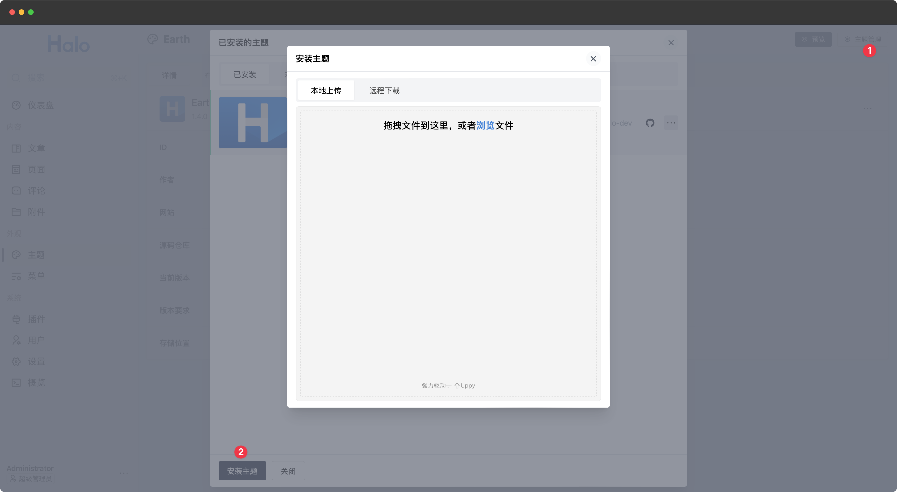
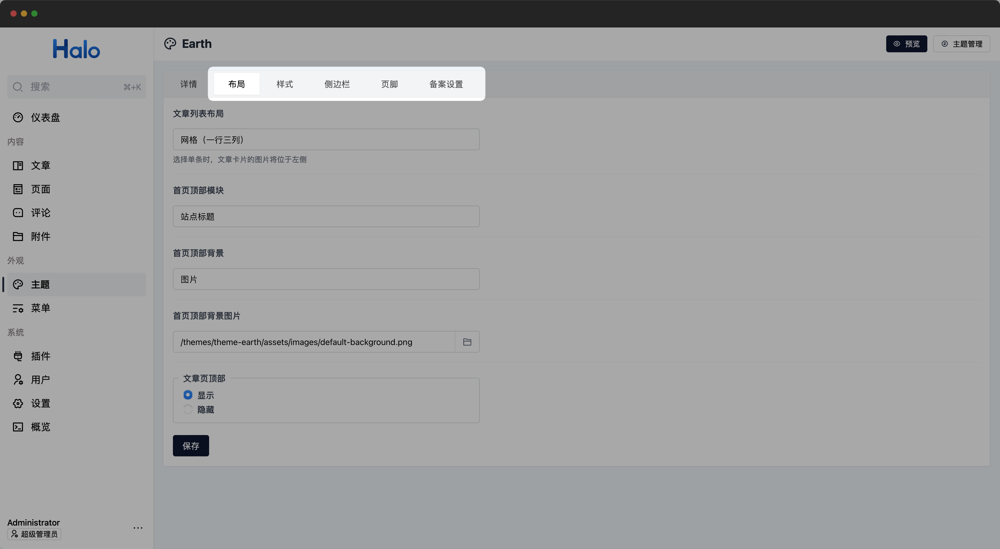
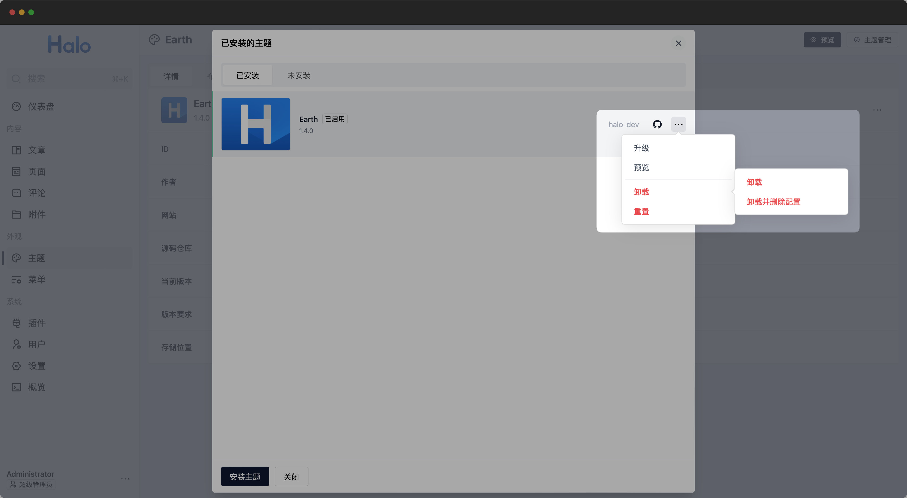

主题
主题包含了各种站点页面模板的资源包。用户访问 Halo 站点浏览到的内容及样式，由 Halo 管理端所配置使用的主题所决定。
目前有两个官方渠道可以获取主题：
- 应用市场：https://halo.run/store/apps
- Awesome Halo：https://github.com/halo-sigs/awesome-halo
安装主题
点击主题页面右上方的 主题管理 按钮即可弹出主题管理对话框。
目前 Halo 提供了两种主题安装方式。
本地上传安装
你可以点击主题管理对话框下方的 安装主题 按钮，在弹出的安装主题对话框中上传主题压缩包。

主题安装成功后，便会出现在已安装主题列表中。
远程下载安装
同样，在安装主题的对话框中，切换到远程下载选项卡，输入主题的下载地址，点击 下载 按钮即可开始下载主题。
下载完成后，便会出现在已安装主题列表中。
此外， Halo 的应用市场也支持通过输入站点地址的方式自动跳转到你的站点进行安装，演示视频：
切换主题
同样点击主题页面右上方的 主题管理 按钮弹出主题管理对话框。
在弹框中点击选中要切换的目标主题，此时页面返回到主题详情页，点击右上角的 启用 按钮即可将当前主题切换为实际使用的主题。
仅选中主题不点击右上角的 启用 按钮时，不会影响当前实际使用的主题。
你也可以在已安装主题列表中，通过后方 ··· 的更多操作中的启用选项直接启用指定的主题。
修改主题设置
主题页面默认显示出了当前主题的详细信息，在详细信息标签页后方的标签页，即为主题提供的相关设置。不同的主题提供的设置项各不相同，设置项的详细说明请参考对应主题的文档。

以 Halo 的默认主题 Earth 为例，该主题提供了布局、样式、侧边栏、页脚及备案设置共五组配置项。
你可以点击主题列表指定主题所在行后方的 ··· 更多操作按钮，选择其中的 重置 选项将主题提供的设置项恢复为默认值。
预览主题
通过预览功能，你可以在不更改当前启用主题的情况下查看不同主题的效果。点击主题详情页面右上角的 预览 按钮预览当前主题，或者进入已安装主题列表，通过后方 ··· 的更多操作中的预览选项预览指定的主题。
在主题预览页面你可以切换不同分辨率的设备，模拟主题在不同终端下的显示效果。也可以通过右上角的功能菜单切换预览的主题，或者调整当前主题的设置，查看不同设置下主题所展现的区别。
演示视频：
升级主题
点击主题详情页右上角的 ··· 更多操作按钮，选择其中的 升级 选项即可打开升级主题的对话框，与安装主题一样，同时支持本地上传和远程下载。
重载主题配置
如果当前主题提供的设置项发生变化，可以通过 ··· 更多操作中的 重载主题配置 选项对主题配置项进行更新。
重置
如果你需要清空所有主题配置并重新配置主题，你可以通过 ··· 更多操作中的 重置 选项将主题提供的设置项恢复为默认值。
卸载主题
进入已安装主题列表，点击指定主题所在行后方的 ··· 更多操作按钮，选择其中的 卸载 选项即可对当前主题进行卸载。

目前提供了 卸载 及 卸载并删除配置 两种卸载方式。
仅卸载主题时主题的配置信息会进行保留，当重新安装主题后还可以使用之前已保存的配置。